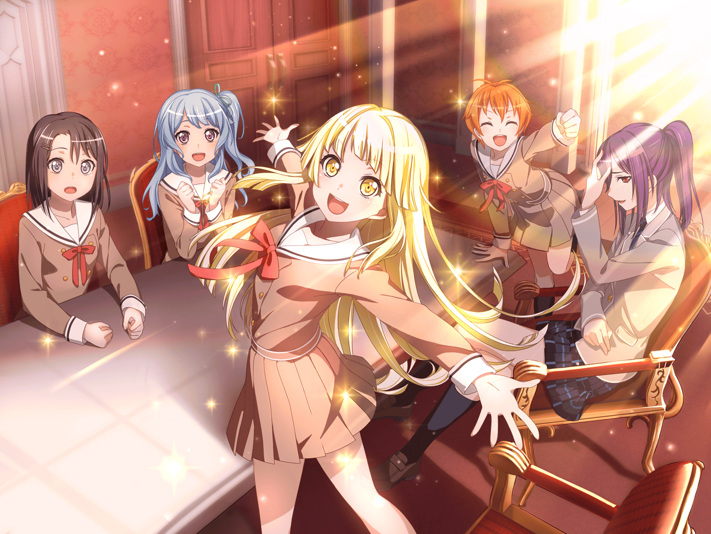

数日後
弦巻家 応接室
こころ
ボーカルって、思ったより難しいのね！
メロディと歌詞を覚えるっていう技術がいるんだわ！
美咲
ここまで来て、
ようやくその重要性に気づいてくれて、
あたしは本当にうれしいよ……
花音
こころちゃん、歌は上手だけど、
気分で歌詞やメロディを変えちゃったりするから
薫
そんな困らせ屋さんなこころに振り回される日々……
……儚い……
美咲
薫さん。やっとやる気になったんだから
フォローしないでください
花音
音楽で世界を笑顔にするために、
ＣＤを作って配って回る……
私はすごく、いい方法だと思うな
美咲
こころが今まで出した活動案で、唯一まともかもね
こころ
ふんふんふ～ん♪
たぶん覚えたと思うから、スタジオに録りに行きたいわ！
ところで、はぐみはまだかしら？
薫
キャプテンは忙しいんだろう。
しばらく待ってこなかったらスタジオ録りは次の機会に……
はぐみ
ごっ、ごめーん、遅れちゃった！
あかりのリハビリ見に寄ってて……！
花音
はぐみちゃん……！
そうだったんだ。様子、どうだった？
はぐみ
うんっ。すっごい元気！
早くヒーローになるんだって、
毎日ギリギリまでリハビリしてるんだって
はぐみ
あかりもだけどね、あの看護師さんも、
すっごい嬉しそうだった。笑顔だったよ！
美咲
そっか。……よかった……
薫
そう言うはぐみも、とてもいい笑顔をしているね……
はぐみ
あっ。そうかも。
はぐみ、みんながヒーローってことだけじゃなくて、
笑顔もちょっと、忘れちゃってたかも
こころ
——それよ！！
美咲
わっ。なに急に、首突っ込んできて
こころ
あたし、あかりのことで、
もうひとつ気づいたことがあるのっ
花音・薫
こころ（ちゃん）？
こころ
あたし、世界はみんな笑顔が大好きだと思ってたの。
でも、そうなんだけど、中にはあかりやはぐみのように、
なぜか笑顔を忘れちゃう人が結構いるのね！
こころ
そういう人たちって、なんて言うか……
すごくもったいないと思わない！？
だって笑顔になったら、こんなに最高なのよ？
美咲
もったいないってあんた……
花音
ふふっ、こころちゃんらしい言い方だね……
薫
かのシェイクスピア曰く、
——不幸を治す薬は希望より外にない……
美咲
意味わかってないのに、
たまに的を射た引用、持ってきますよね
薫
……生きるべきか、死ぬべきか。それが問題だ
はぐみ
も、問題なの？
美咲
問題じゃない。今のは外してます
こころ
とにかく、だからあたしねっ、
今は何よりも早く、そういうもったいない人達に、
笑顔を思い出して欲しいのっ
はぐみ
はぐみとあかりみたいにだねっ。
それって……すごく、なんていうか、
大切で、大事なことだと思うなっ！
こころ
でしょう？ だからみんな、
笑顔を忘れている人を見つけたら、すぐに教えてちょうだい！
あたし達が思い出させにいかなくちゃ！
はぐみ・薫
おーっ！
美咲
ちょっとちょっと。今回はたまたま
上手くいったけど、
結構それ、大それた目標じゃない！？
美咲
笑いたがってる人がいるところ
探してライブするならまだしも、
それじゃあ、いつも成功ってわけには……！
こころ
やってないのにどうして成功しないってわかるの？
美咲
またそれか……まったく、あんたは。
あ～～～もう！！
花音
み、美咲ちゃん？
あ……まさか……
花音
（美咲ちゃんはずっと、
このバンドを抜けるって言ってた。
もう付き合いきれないって思ってるのかな……）
美咲
あたしは人生なにごともほどほどがいいの……っ！
だから正直なんでこんなぶっ飛んだ団体にいるのかわかんないし、
あんたの言ってることはおとぎばなしにしか聞こえない！
美咲
でもさ。こうやって、なんかみんなでライブしたり、
みんなであかりのことで悩んだりしてさ……！
なんて言うか……なんだ？ あたし、なに言ってるんだろ……
こころ
なに？
言いたいことがあるのに、なんで言わないの？
美咲
うぅ。本当あんたって、
いちいち痛いとこ突っ込んでくるなーもぉ
美咲
あたしはだから……もしこれから、笑顔にする活動が失敗して、
ヒーローごっこの時みたいに、あんたが変な顔したり、
みんなが落ち込むのを見るのが嫌なの……っ！！
花音・薫・はぐみ
美咲ちゃん……
美咲……
みーくん……
こころ
なんだ！ それなら全然問題ないわよ？
美咲
なくはないでしょ。
落ち込んだら、傷つくじゃん。
……みんなが、嫌な気分になるじゃん
こころ
……嫌？
傷……？
とかは、よくわからないけど？
こころ
でも、それってつまり、
誰かが笑顔を忘れてしまうかもってことでしょ？
そしたら、あたしたちの残った誰かが思い出させればいいわ
美咲
……じゃあ、もし、全員忘れたら？

こころ
決まってるわっ。
その時はあたし達以外の誰かが、
思い出させてくれるわよ！
こころ
だって、
世界はみーんなが、ヒーローなんだからっ！！
美咲
……そっか。
ははっ
美咲
は。あーそうだった。
あたしってばなに真剣になってんだろ。
あんたに話なんか通じるわけないんだった！
美咲
……わかった、いーよ。
そのうち飽きるかもだけど、
まあそれまでは、あんたのおとぎばなしに付き合う
花音
美咲ちゃん……！
こころ
付き合ってくれるなら嬉しいわ！
ハロー、ハッピーワールド！
世界を笑顔に頑張りましょっ！
薫・はぐみ・花音
おーっ
こころ
ところでミッシェルはどこかしら？
ミッシェルがいないといまいち調子が出ないのよ
薫・はぐみ
そうだそうだ！
美咲
まずはそこを理解するところから、始めようか